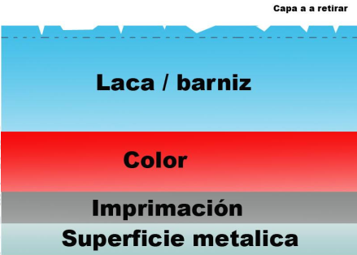
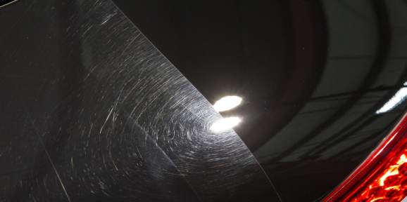
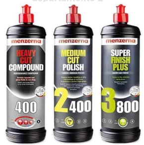
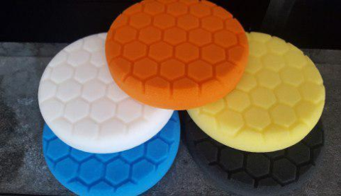
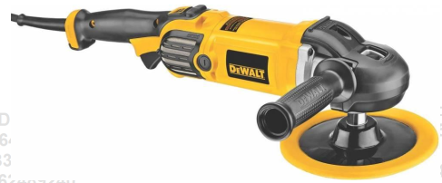
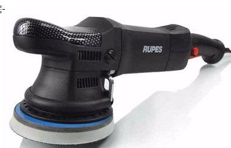
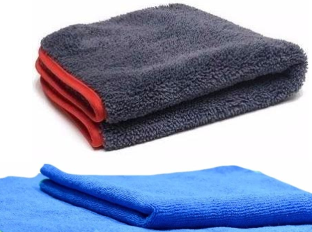
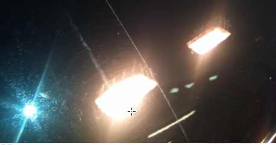
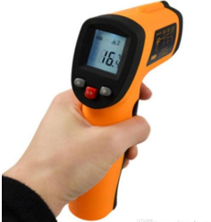
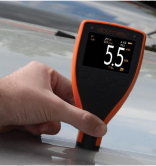

¿En qué consiste un pulido?
Lo que se va a trabajar en un proceso de pulido es la capa más superficial de la pintura del
vehiculo, la cual se degrada lentamente por las inclemencias climáticas.
Esto provoca microarañazos circulares (conocidos mundialmente como "swirls" o telas de araña), lo
que repercute een la perdida de brillo de la pintura.
En la foto puede verse un corte de las capas que hacen a la pintura de la superficie y la que se
trabaja en un pulido.


Del lado izquierdo la superficie sin pulir, del lado derecho la superficie pulida
¿Qué se necesita para pulir?
Pulimentos (compound)

Un pulimento es un compuesto cremoso con microabrasivos los cuales se encargan de eliminar las
imperfecciones o swirls de la pintura de manera homogénea.
Por supuesto que existeb pulimentos con distintos niveles de abrasividad, la elección de cada
pulimento va a depender del daño que tenga la superficie a tratar y de las propias indicaciones
del
fabricante del compónente.
El proceso de pulido generalmente consta de 3 pasos o etapas,en órden son:
- Corte (cut)
- Pulido (polish)
- Acabado (finish)
Pad

Son discos que se adaptan a la pulidora, fabricados en poliespuma su función es la de friccionar
contra la pintura y retirar la capa superficial, una función similar a un lijado pero menos
invasivo.
Los hay tambien de cordero que son muy abrasivos.
Pulidora Rotativa o Roto-orbital

Rotativa
Logran un mejor acabado a la ves que son potentes y permiten quitar aquellos arañazos más
profundos.
Deben usarse con cuidado ya qie a su gran potencia es más fácil quemar la pintura.
Roto-orbital

Es un tipo más segura de trabajar ya que no se correp peligro de quemar la pintura.
Al tener menos potencia en menos abrasiva lo que demanda mas tiempo de trabajo.
Microfibras

Necesitamos 2 tipos, una de pelo largo para retirar el exceso de pulimento y otra de pelo corto,
es importante que sean de buena calidad para evitar nuevos swirls
Luz

Un elemento no menos importante es la luz, fundamental para guiarse en el proceso de pulido.
Podemos usar desde el flash de nuestro celular hasta inversiones en reflectores fijos y moviles
preferiblemente halógenas
Otras herramientas

Con el correr del tiempo será bueno ir incorporando herramientas más complejas y algo costosas pero
que nos erá de utilidad una vez que nos larguemos como profesionales.
Podemos mencionar elementos como:
- Micrómetro de espesores
- Medidor de temperatura
